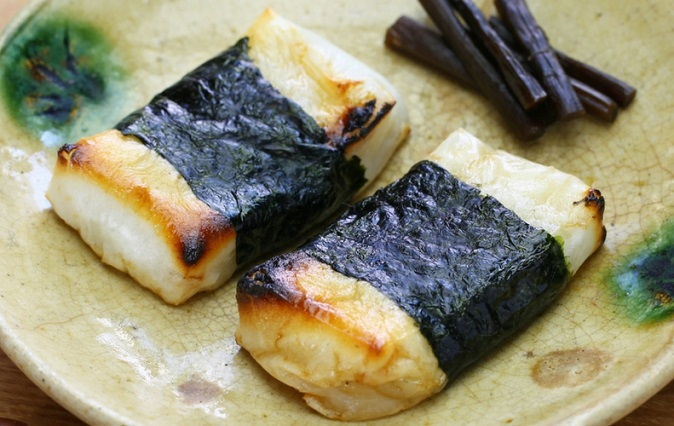

Broiled Mochi with Nori Seaweed

Description
Mochi is a sweet, short-grained, very chewy rice with a high starch content. This is a traditional Japanese dish, and one of the best in winters. It is eaten in wrapped Nori which is also known as Dry Seaweed.
This amazing dish will take you only about 17 minutes to cook, and the servings will depend on how many Mochi and Seaweed strips you take. In this recipe, we'll be making 8 servings.
Ingredients
- 8 frozen mochi squares
- 1/2 cup soy sauce
- 1 sheet nori (dry seaweed)
Steps
- Preheat oven to 450 degrees F (275 degrees C)
- Dip mochi into soy sauce, then place on a baking sheet.
- Bake for about 5 minutes, or until heated throughout.
- While mochi is cooking, cut dried seaweed into 8 strips.
- Place seaweed strips in a large frying pan over medium heat, and stop when they are warm enough, after approximately 1 to 2 minutes.
- Wrap each mochi cake in seaweed, serve warm.